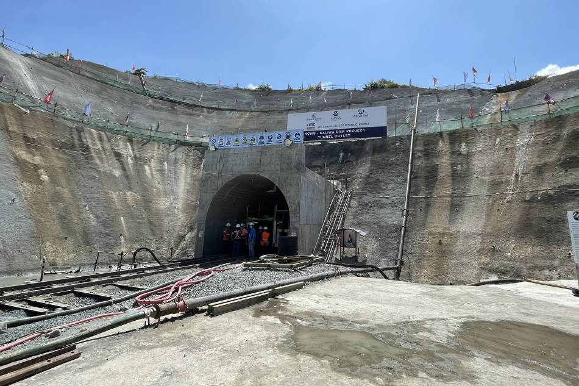
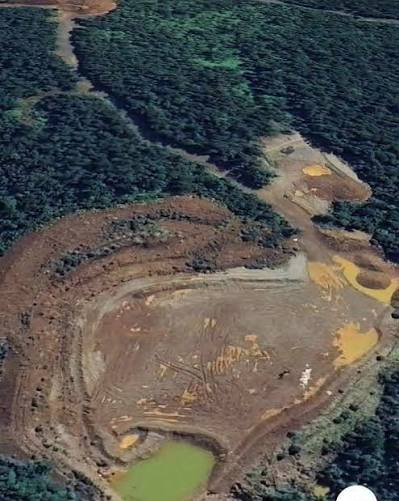
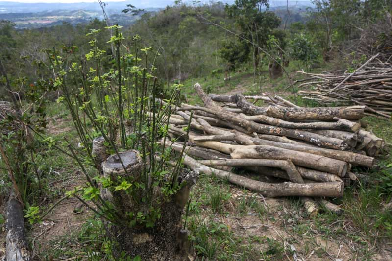

Loss of biodiversity
Endangered species such as the Philippine eagle, cloud rat, and golden-crowned flying fox lose their habitats due to deforestation and mining (Rappler, 2023).
We work alongside local communities and conservation leaders to protect forests, wildlife and the natural systems that sustain us.
The Sierra Madre Mountain Range is the longest in the Philippines, stretching over 500 km from Cagayan to Quezon. It is called the country’s “green wall” because it shields lowland areas from typhoons and floods while serving as a biodiversity hotspot and home to indigenous groups (Rappler, 2023).
We support locally led conservation, safeguard critical ecosystems, and help communities build a future where people and nature thrive together.
Discover our approach →The range faces overlapping pressures from development, resource extraction, and weak protection of its forests and communities.




Damage to the Sierra Madre reaches far beyond the forest, affecting wildlife, communities, safety, water and the economy.
Endangered species such as the Philippine eagle, cloud rat, and golden-crowned flying fox lose their habitats due to deforestation and mining (Rappler, 2023).
Forest destruction weakens Sierra Madre's natural barrier, exposing Metro Manila and Central Luzon to strong typhoons and floods (Rolling Stone PH, 2024).
Dumagat-Remontado and other groups are forced to leave ancestral lands due to mining and dam projects (Earth Journalism Network, 2023).
Tree removal from mining and logging areas increases erosion, landslide risk, and river sedimentation (Global Forest Watch, 2024).
Mining runoff and dam construction affect rivers and groundwater, threatening freshwater supply (PCIJ, 2024).
Loss of forests reduces carbon absorption, worsening the effects of climate change in Luzon (Climate Change Commission, 2022).
Deforestation-driven flooding, soil degradation, and sedimentation affect downstream agriculture and fisheries (PCIJ, 2024).
From tropical forests to threatened habitats, our work focuses on protecting places where conservation can make the greatest difference.
Protect the habitats threatened species need to survive.
Keep forests standing and preserve the carbon they store.
Partner with people who know and care for these landscapes.
A conservation initiative protecting a rare mountain forest ecosystem and the wildlife that depends on it.
Support This Project
How local conservation leaders are restoring a threatened landscape.

Protecting connected habitat gives wildlife room to move and thrive.

Protecting mature forests helps biodiversity and strengthens climate resilience.
Your support can help protect threatened habitats, empower local conservationists and give wildlife a future.
Donate TodayHelp restore habitats, support community-led conservation, and make every field day count for wildlife and people alike.